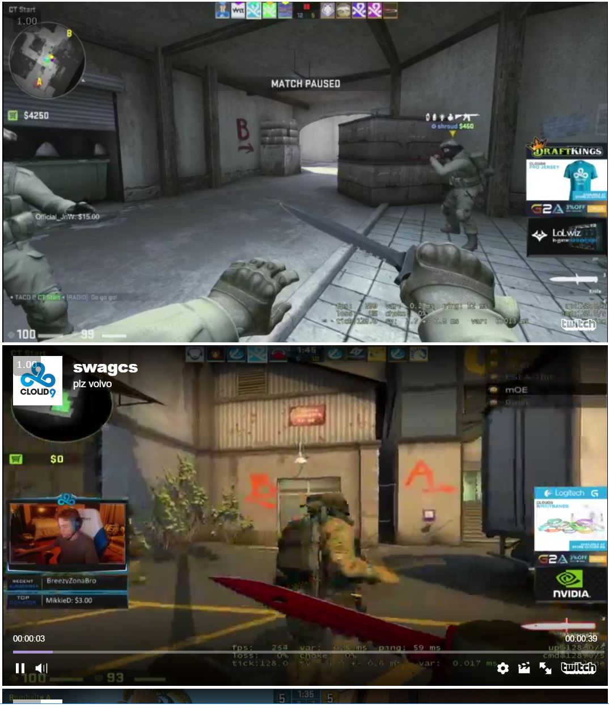

Let's take what we have learned and go one step further. The following code will take the 3 most recent videos from swagcs' channel and embed them into a website.
var req = new XMLHttpRequest();
var APIkey = "INSERT_YOUR_API_KEY_HERE";
var curQuery = "channels/swagcs/videos?limit=3";
req.open("GET", "https://api.twitch.tv/kraken/" + curQuery, true);
req.setRequestHeader("Client-ID", APIkey);
req.addEventListener("load", function(){
if(req.status >= 200 && req.status < 400){
var response = JSON.parse(req.responseText);
var i = 1;
response.videos.forEach(function(video)
{
var options = {
width: 854,
height: 480,
video: video._id
};
var player = new Twitch.Player("video" + i, options);
player.setVolume(0.5);
player.addEventListener(Twitch.Player.PAUSE, () => {console.log("Player is paused")});
i++;
});
}
else{
console.log("Error in network request: " + req.statusText);
}});
req.send(null);
event.preventDefault();
We replaced "console.log(response)" with the response.videos.forEach(function(video)) function. The code within that function allows us to embed videos into a website.
In order to show the players that were created using Javascript you should add code like this to the body of your HTML file.
<script src= "http://player.twitch.tv/js/embed/v1.js"></script>
<div id="video1"></div>
<div id="video2"></div>
<div id="video3"></div>Reference Code from Twitch API github

Previous
Next